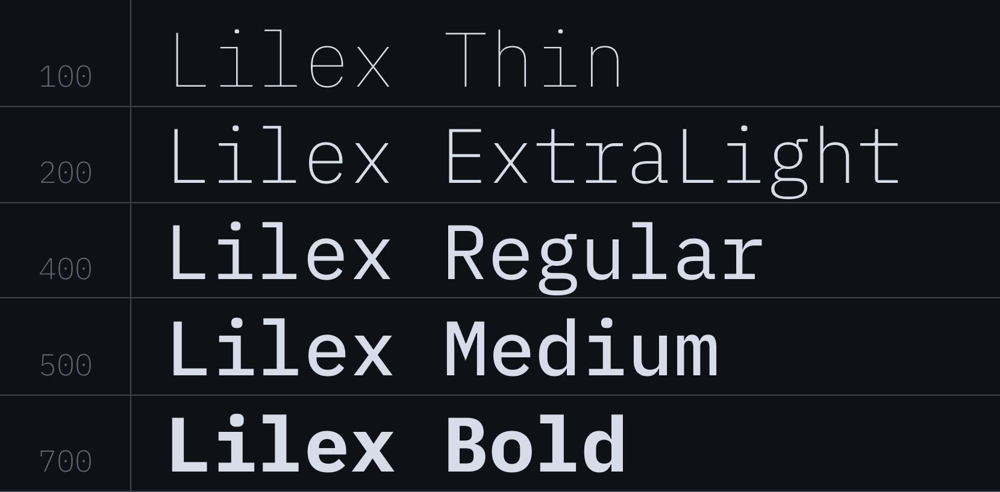
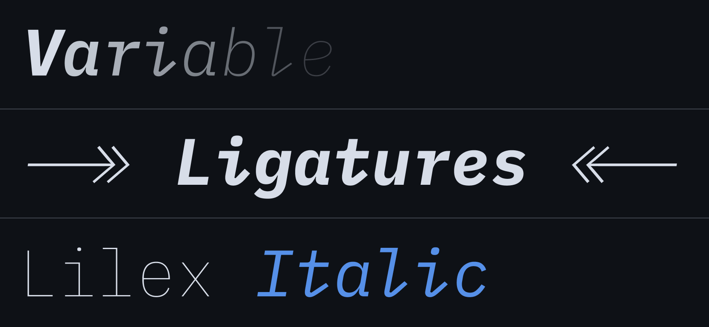
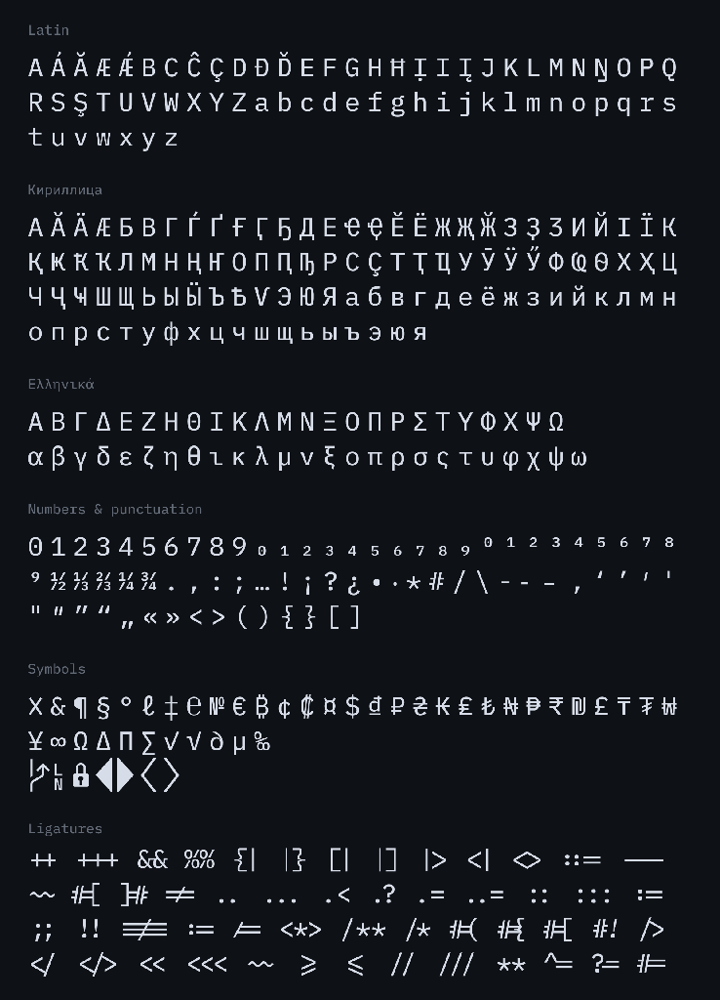
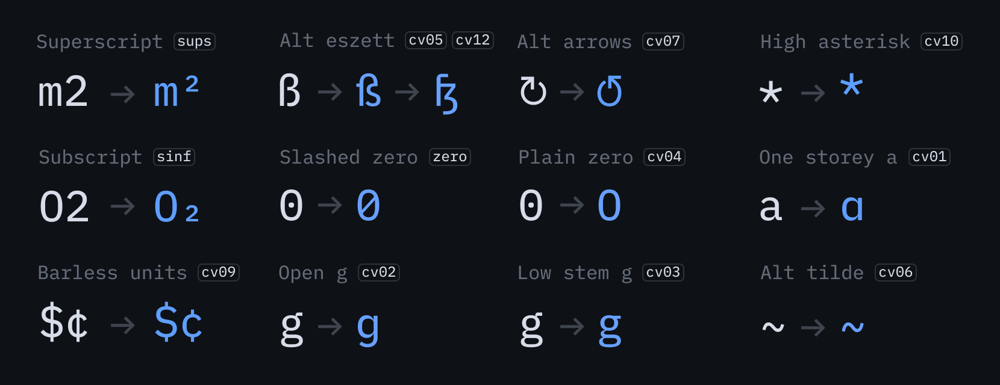
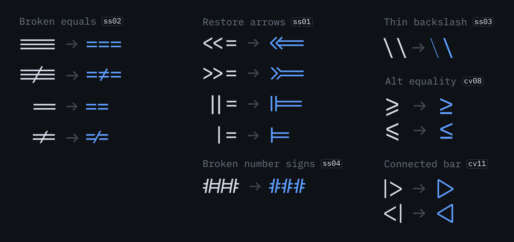
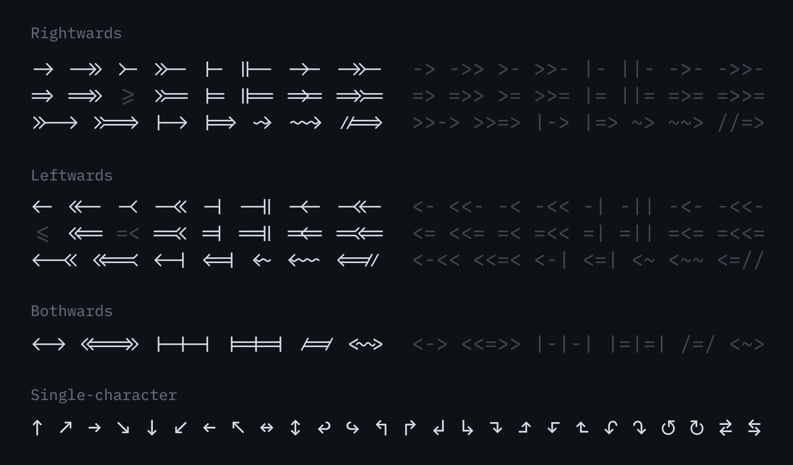

Lilex is an extended font on top of IBM Plex Mono designed for developers. It contains ligatures, special characters (e.g. PowerLine), Greek and exists in a variable format.
Ligatures is just a font rendering feature: underlying code remains ASCII-compatible. This makes it easier to read and understand the code. In some cases, the ligatures connect closely related characters (==, ---), while in others they optically align the glyphs (.., ??).
To contribute, see github.com/mishamyrt/Lilex.
There are 5 font weights available in Lilex, ranging from Thin to Bold. In addition, a variable font is available.
Lilex comes with a full set of italics: all weights, ligatures, PowerLine. Lilex Italic can do everything that Lilex does.
The font has support for Latin, Cyrillic and Greek. It also includes ligatures and powerline symbols.
The font has additional styles for some characters, so it can be configured to better fit your needs. Instructions on how to activate OpenType features in your IDE can be found on the internet, or build your own variation of the font with forced features
Some ligatures also have additional options. For example, certain arrows are initially switched off to avoid conflicts with logical operations.
Lilex uses generated ligatures for arrows, so they can be infinite. Combine that to assemble your unique arrows. There is also a full set of single-character arrows (↑, ↓, etc.) in the font.
